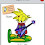

i got an idea from gama make backgrounds and make something new for juniors and i like something like make groups like fishlate gang and make something like private chat but not just 2 ppl chatting 3 or or any number u want if they want
maybe something where on your friends player cards there is a find button so you can find them to go and play with them easier instead of mailing them.
I think chobots is just fine, but there could be like special suits made by people who invited most friends... i mean like mimo has his own one, maybe something like that i dunno lol
Get more server power ;) Club penguin never lags. I think the invite a friend thing is really cool too! Maybe add some stuff that would appeal to both yonger and older audiences. THATS IT!!!! Music! Get some more background music. Quite franly my mum said she gets tired of hearing de da do da be bo da be da for the whole afternoon!
what ganzy was talking about with more than 2 ppl chatting in private chat is called party chat or group chat i think there should be more music...my mum says like williams mum lol du da do a da du du dad du du....lol well make more missions...more games,more clothes...lol i think that the shirts for chobot secret squad will be a dream that will never come true btw...but the thing that annoys me is that the squad asked for tees,didnt get them,and now you guys make mod shirts and stuff :\.... gama2xo
more updates i enjoy updates loads!:) oh and vayerman i have some good ideas wich will be on moonkees blog on friday or saturday. Hope you like then im sketching them up at the minute though so they wont be on till at least friday:) Herip..
and cars would be violent content i think lol ppl would go like "BEEP BEEP MAKE WAY" and then say things like *runs over that chobot with car* lol that would be violent content i think gama2xo
I feel you should be able to trade citizen items with other citizens. I also think we need some new citizen magic and a new shirt. I also think the grafiti wall needs an erase button for citizens to press when they want to erase or an eraser. And lastly we need a new mod item. Oh and a new food for the Cafe'
Well, I have a few ideas. I agree with ganzy2 on most of them. 1. The first one is to improve and make chobots more stable. A little less lag would be nice. :) 2. Backgrounds on your player card would be good instead of the plain white background :) 3. We could form teams that could play games together, ect. We could get like 10% of the bugs that they earn or something like that. 4. We could do group chats, like 5 people chatting in private chat with each other. Maybe chatting with your team.
hmm i would have have to say improve the non-citizen clothes because i want a new style but there are no new clothes that acually look good also make the friends list bigger for juniors
I got an good idea! We should put out more stuff for non-citizens because yeah i know all non-citizens get clothes but they always mone about haveing rubbish things like no hats or cant do exclusive stuff also we need something to show all the blogs so everyone can see the ones that are least populer(like my i don't have a single thing there because mo on e is seeing it)
u could make some boards for non-citizens there could be a find button on other people's player cards so you can go and play with them easier and you could have more contests and parties apart from that chobots is awesome
Maybe... Backgrounds? You could have like special people like e.g. Rockhopper were you can meet him and get a background. Or Pins? That come out once a week? And Maybe make chobots a little less laggy so I can go on it on my PS3.
Im with william. Also maybe make the 'send a message' box bigger? Its annoying when what you want to write doesnt let you, when you have written too much.
um..i would like that non citizens could play the instrument, and i would like a non citizen cho board..i mean not just for me... and maby a special server for agents, in what non agents could not enter..just mods and agents.. and if someone has a beautiful drawing on the wall, give them a basia suit, (for girls) and for boys a ... man suit?or idk what name..but i think i have a perfect drawing for that kind of suit! and can some agenst make rain?like the trustfull ones!:)(i know i ain't in there yet)
hey , I think in chobots we need to have something ...uh... a new button at your playercard and to select with who you want to make a team...something like this ...And about a new place , I think here should to be a chobots garden where we care plants and when plants are big , they give us money , and maybe some new clothes and backgrounds for our playercard !!!I will make some designs about all new updades what i want to be ...I will post them on my blog ...That's only what i know now/...
hi, this is kingsonnest, i thick chobot is perfectly ok, but i have some cool new ideas that will make chobots better.
1)what about make some sort of groups and teams?, more badges (active badge). More badges will keep people more busy?
2)What about expanding the friendlist, many chobots want to add more friends to their friendlist?
3)More contests , this will keep people more busy and active. I Also like the idea about the sweet battle or cow mission contest (may be chopix mission contest or nichos kingdom contest?) what do you think?
4) More background music, many people like pop music because of the fast rythm.
5) I also agree with video, which is to improve the chobot server + group chats should be made vailable + the ability to trade citizen items.
Ganzy it's tright, we should make all that :) Also, i have 1 idea: why not make a Skate Park so we can learn tricks on Cho-Boards And we could have a game in Music Location, where we need to get the notes right, preesing the button corerectly, like ''Dance Dance Revolution''
Well I tink There should be backgrounds that would be cool more stuff for juniors ect. AND DEFINATLY DIFFERANT BACKGROUND MUSIC! It would be quite cool if you could put your own music on a music player on chobots? and you could listen to your own music! so a music palyer ummmm OH! and and and!! I think agents should get an agent only item with an agent badge on it? coz it would be super cool if agents got to wear their badge on their chobots! same with mods badge too :) and ive got more lol! Event only stuff like for halloween= ghost suit xmas= raindeer antlers? xmas stuff easter= BUNNY EARS!!! And so on.. and more!!!!! New rocket boots!! fire,air and magnet thingy get borin... maybe Ice shoes, bubble boots! (nacho sho...umm no that would take it too far!) and yes EVEN MORE!!! A stage! where chobots can act movies and Well basically mess around! also a stage could be good for conserts with the instruments! plus More quests Me and my little cuz love the quests could we have some more please? i have an idea for a quest Deep space diving! where You go diving on a distant planet to capture cho-gems wich are worth 100 bugs each? it could be linking to the scuba suit... :\ AND ALSO!!! naah im just kidding thats all i hope u like my ideas!
I think Agents need more power. When someone does something bad, how do we keep other people safe? There arent usually mods on, and they never come when i invite them. Agents need a chat ban, or a warning button and soon!
here is the main sutf! 1. make a find friend button that tells what server and where they are 2.make backgounds like fire or chopix leaning on you 3. make a better backround music like (greenday-American idiot , greenday-holiday , linkin park-what Ive done, and then songs keep comming) 4.do a poll on witch item should come to chobots! (like i drew some stuff and sent it in but would want to see if ppl like it and stuf) 5.make it rain a littel more so ppl dont ask everyone if they have a mod item kuz they missed it or something 6. less lags,and less crashes would be awesome! 7.make it allowed that you can trade citizen items!!!! 8. when ur a citizen and ur citizenship ends u can keep wearing your cloths!(people will still buy citizen ships kuz new items that are citizens only will come out)but npt the house furniture 9.update on cloths and stuff alot more!
hi vayerman i think you should let us trade costumes cause i wanted to trade my mimos costume but it would not let me and if a mem gives you a mem gift you can still use it plz do this
1.You Should make team button where peopl have teams and if u wanna join u click on the playercard and then it will ask the team captian if he want to let u join or something like that!
2.Less Lags And Crashes!
3.New Or More items For Juniors!
4.The Music player idea from Rofroze!
5. This thing that u can your own game!
6. And like the idea from Rofroze Where u collect Cho-gems and u hide them on chobots everday!
7. More Parties and Contests!
8. This Thing that u can help new people on chobots giving them tours!
9. Graffiti of the week and the winner will get like 1000 bugs or something!
Argghhh, lol too many ideas in my head but you asked for just one, so I am going to go for something that was discussed by all the Agents and Tina at the Agent meeting, btw, what happened to the meetings, you told us we should have them, then you had a poll asking whether a Mod should hold them and the people voted and said yes a Mod should hold them, then you held a poll saying do Agents need weekly meetings and the people voted again with the majority saying yes they do, then you kinda left us to it :O Anyway, so what was discussed and i thought decided was that Agents should have some kind of warning button to use when a Chobot is persistently rule breaking, something that stops their chat for a minute or so with the rules in front of them and if they continue to rule break straight after and the warning button has to be used again the rule breaker should get automatically kicked or chat banned for a suitable amount of time, this would mostly be used with bad language, it's very frustrating for everyone when a Chobot is using bad language but starring out certain letters to get past the filters and although they are reported by Agents and other Chobots around them nothing is done to the Chobot that is rule breaking, all we can do then is just ask other Chobots to add them to their ignore list so they don't have to see the bad words being written, and to safeguard everyone I am sure it can be checked by the reports that if any Agent is seen to using the warning button unnecessarily then they should have their warning button taken away. Wow long comment, sorry about that but it was just one thing lol :D
it is plad556 i think new places on the map new cloths Backgrounds House updates New stuff for the pets a button to find your friends make more agents new background music that u can change trading citizen items less lag CARS for citizens $$$free items once a week but u have to do a quest or something like that $$$ more ways to make money $$$$$$$
you should have more mods,agints,magic, clothes instuments,games,more room in citys,numbere limit on how many ppl in as room,more parties, rain and have backrounds,& new music.
making a 3 or 4 person allowed private chat :D i mean,sometimes i want to talk to 2 people, so i don't have to explain something for both private chats
Even though I am not an agent I think agents should get special uniforms so newer chobots can identify them so if they need an agent to take care of a bad chobot its easier to find one
juniors should have a grafitti walll too like the citizens and the agents and way more servers like clubpenguin and lastly i think chopix should stay cause its hard earning money it took me five hours to get at least 4000 coins for a pair of rocket shoes but when chopix is is here it takes me five minutes to get that much plz consider theese
Maybe you could make a better connection because i get lots of connection errors why im talking to friend. Mabe its just my computer. Also sorry i was not here yesterday, we had to do family work around the house. -nickpop
i think that!!! yay i got one!!! you need to make the chobots better!!! my computer always gets slow and the chobots window closes if i want to play cobots for a long time. so, you need to fix that.
1.like we said in the meeting, and it was in the news we should get our warning button because lot of people are breaking rules we cant do anything but report. 2. please less laggy 3. can there be a button or something and when you press it you wont accept any messages, includes people in your friendslist 4. some new clothes for juniors 5. agents should be able to do more things!
I think instead of having mods making other people agents we need to have a hard test to become an agent so chobots can have chances of bieng one. And you can only put up the test one week in a month so there will not be that much agents. If there where then it would be crazy. But i think this is a very good idea. Thankyou for listening to my idea
I think we should have more missions, i looked forward to the Nichos kingdom but was a bit dissapointed becasue it was so short, a bit more of an adventure game against the Nichos.
Non-citizens need a new pair of rocket boots. and we need backgrounds on olur players cards to make us look better.chobots should give out some free items say everytwo weeks like hair and T-shirts and stuff like that.those things should be rare so it can be a good trading object.I hope chobots team can use my advice
I would suggest making better servers because i always crash when there's a party. and also some new backround music. Things for agents: - Kick button (for the most trusted agents) - Special Agent items that are not tradeable or giftable - Better agent hq. I have been there theres not much to do :/ Oh and i would suggest that you can sit in the furniture citizens have like when you click a couch it says sit liedown or whatsoever.
i agree with ganzy2,backrounds.But my idea:more magic in citizen and nn-citizen catologs. you know what'll make me happier?when that "under construction" place comes out!I bet its the stage ;)
:o i just got an idea 4 a new mission!!!!In chobots are little plants,right?well a gardener named "...well i dont have a name...but it could be placed in a cow mission?and whenever we want we go over to em',take our plant water-thingy,then search chobots for plants to water!maybe if u win,u get a ten-gallon hat,or a rake,I hope you like my idea!!
Maybe you need more games and more things for non citizens! Oh! And parties that everyone knows about! Like people visiting to give things! And maybe you can make things a lil more cheaper
You just cant make things for juniors, thats why we have CITIZENSHIP. then it will be unfair for CITIZENS if you have maked the wall and light bulb NON CITIZEN. THATS THE BENEFITS OF CITIZENSHIP
for me the first thing is limitation like right now numerous people enter a room which results only in lagg and crashing so i think making room limits will control lagg a lot. also the inviting is cool but when a server is full people get a lot of ppl invited which result in server overloading.which might crash servers you should do something about it.and many other things i filled your mail with suggestion in the last 2-3 days
I think you should be able to trade coins for clothes with other people, also you should be able to design your chobots clothes with a selection of parts to choose from and some exclusive to citizens. P.s. Please go to: heatblastschobotnews.com and comment!
mabey non citizen could play the drums or go on one cho board like the rocket boots.Backgrounds are a great idea mabey could we have to colour shower back in our houses.could u have special keyson the keboard u press and u start dancing,waving ect.Mabey updates for magic for non citizens.
And I think at academy sould come moderators at a hour good for all new chobots , and moderators to explain them all about chobots world and how to become an agent ,the rules ... and other!!! Hope you like my idea : )
this has nothin to do with this but visit my blog it is shasta6193rules.blogspot.com and follow i know i have 1 mod that followed and if u follow u willl get a chance to be in my agent poll and when u win the poll twice i will recomend u ~$hata6193~
First make a limit of how many chobots can be in a room because my computer always crashers because theres to many chobots in a room!i understand if theres a mod lol:D.and give chobots 5000 bugs when they start so they dont say:pls can i have a gift im poor and i dont have enything!
First maybe make it easier for chobots to become agents and chobots who are agents cant invite chobots who are not to the seceret hideout because then its not really seceret!
Maybe we can have a hotel for chobots to stay in! and a skate park so we can learn to do tricks on chobots. Probably when u buy the instruments you could create a band and save that music and show it too the world! I have lots of ideas here. probably trustful and helpful agents can make it rain. Maybe we cam like write notes and stick it somewhere, or make a drawing on the paper and give it to a friend or something. :) what do you think about them. oh and thats not all what about chobots could interact with club penguin! we jsut need club penguins permissions first of course lol.
ooo i got one. how about this tool for you tht if you press it it makes you idle and you wont get auto diconnect.and i think there should be this item called service and it feeds your pets by voice command if you chat
you should bring trade and gift back and there hsould be clothes for pets they would look sooo cute :) and there should be a racer suit exact same as the one thats already out but it doesn't fly and its cheaper. -sergee237
maybe we could be able to swap items like if ur a nonmember and u want a hover board so u might want to swap it with a more expensive nonmember item. well, thatd be very cool :)
also mayyyybe we could make somethin that u could throw like in club penguin :) but not the paint balls that u throw at trees maybe u could throw graffiti cans at each other or books or maybe even chobots! well, i hope u can do it. rock on chobots!
MMMMAAAYBBBEE we could aaalllssoo have more songs ;) and maybe can we have more missions? and can we have more houses but i reeaaallyy would like is club penguin and chobots combined like the world is snow floating on rock in space so club penguin players r able to talk and do everyday chobots/club penguin things and maybe it would be called chub pobots ;) well u would need there permission plus u would get way more popularity on both ;) plus u would earn lotsa money ;)

-2.jpg)


97 comments:
i got an idea from gama make backgrounds
and make something new for juniors
and i like something like make groups
like fishlate gang
and make something like private chat but not just 2 ppl chatting 3 or or any number u want if they want
~ganzy2
maybe something where on your friends player cards there is a find button so you can find them to go and play with them easier instead of mailing them.
and i got something else make the juniors and the agents and the citziens buddy bigger
FIRST POST yay!
i need more mods can you make agents to mods
and i realy want that agents will have more stuff
-angry13-
I think chobots is just fine, but there could be like special suits made by people who invited most friends... i mean like mimo has his own one, maybe something like that i dunno lol
Get more server power ;) Club penguin never lags. I think the invite a friend thing is really cool too! Maybe add some stuff that would appeal to both yonger and older audiences. THATS IT!!!! Music! Get some more background music. Quite franly my mum said she gets tired of hearing de da do da be bo da be da for the whole afternoon!
Also being an agent is becoming a novelty, There could be an untimite citizenship witch could... oh i dont know XP
we need flying cars for non citizens
that are cheep
what ganzy was talking about with more than 2 ppl chatting in private chat is called party chat or group chat
i think there should be more music...my mum says like williams mum lol du da do a da du du dad du du....lol well make more missions...more games,more clothes...lol i think that the shirts for chobot secret squad will be a dream that will never come true btw...but the thing that annoys me is that the squad asked for tees,didnt get them,and now you guys make mod shirts and stuff :\....
gama2xo
more updates i enjoy updates loads!:) oh and vayerman i have some good ideas wich will be on moonkees blog on friday or saturday. Hope you like then im sketching them up at the minute though so they wont be on till at least friday:)
Herip..
and cars would be violent content i think lol ppl would go like "BEEP BEEP MAKE WAY" and then say things like *runs over that chobot with car* lol that would be violent content i think
gama2xo
I feel you should be able to trade citizen items with other citizens. I also think we need some new citizen magic and a new shirt. I also think the grafiti wall needs an erase button for citizens to press when they want to erase or an eraser. And lastly we need a new mod item. Oh and a new food for the Cafe'
and make the chat like xat like a chobot makes a chat let the ppl who he want to join .
Well, I have a few ideas. I agree with ganzy2 on most of them.
1. The first one is to improve and make chobots more stable. A little less lag would be nice. :)
2. Backgrounds on your player card would be good instead of the plain white background :)
3. We could form teams that could play games together, ect. We could get like 10% of the bugs that they earn or something like that.
4. We could do group chats, like 5 people chatting in private chat with each other. Maybe chatting with your team.
hmm i would have have to say improve the non-citizen clothes because i want a new style but there are no new clothes that acually look good also make the friends list bigger for juniors
you guys should improve the servers and things so people don't crash.
I got an good idea!
We should put out more stuff for non-citizens because yeah i know all non-citizens get clothes but they always mone about haveing rubbish things like no hats or cant do exclusive stuff also we need something to show all the blogs so everyone can see the ones that are least populer(like my i don't have a single thing there because mo on e is seeing it)
u could make some boards for non-citizens there could be a find button on other people's player cards so you can go and play with them easier and you could have more contests and parties apart from that chobots is awesome
~Bart1879~
Maybe... Backgrounds?
You could have like special people like e.g. Rockhopper were you can meet him and get a background.
Or Pins? That come out once a week?
And Maybe make chobots a little less laggy so I can go on it on my PS3.
I think chobots should try to make it so we dont crash or lag so much that wuld really inprove the game!
:)
Big Fan zigzag194
Im with william.
Also maybe make the 'send a message' box bigger?
Its annoying when what you want to write doesnt let you, when you have written too much.
um..i would like that non citizens could play the instrument, and i would like a non citizen cho board..i mean not just for me...
and maby a special server for agents, in what non agents could not enter..just mods and agents..
and if someone has a beautiful drawing on the wall, give them a basia suit, (for girls) and for boys a ... man suit?or idk what name..but i think i have a perfect drawing for that kind of suit!
and can some agenst make rain?like the trustfull ones!:)(i know i ain't in there yet)
~Pendul1~
hey , I think in chobots we need to have something ...uh... a new button at your playercard and to select with who you want to make a team...something like this ...And about a new place , I think here should to be a chobots garden where we care plants and when plants are big , they give us money , and maybe some new clothes and backgrounds for our playercard !!!I will make some designs about all new updades what i want to be ...I will post them on my blog ...That's only what i know now/...
Vayer,
When I saw u,u look cool huh
U rox
Do u remember me?
Actually,i am yellowangel
Thx and Good Luck
Take care
hi, this is kingsonnest, i thick chobot is perfectly ok, but i have some cool new ideas that will make chobots better.
1)what about make some sort of groups and teams?, more badges (active badge). More badges will keep people more busy?
2)What about expanding the friendlist, many chobots want to add more friends to their friendlist?
3)More contests , this will keep people more busy and active. I Also like the idea about the sweet battle or cow mission contest (may be chopix mission contest or nichos kingdom contest?) what do you think?
4) More background music, many people like pop music because of the fast rythm.
5) I also agree with video, which is to improve the chobot server + group chats should be made vailable + the ability to trade citizen items.
~kingsonnest~
I Think backgrounds i love them i love them on club penguin and non citizens all my friends or going off and not coming on
Ganzy it's tright, we should make all that :)
Also, i have 1 idea: why not make a Skate Park so we can learn tricks on Cho-Boards
And we could have a game in Music Location, where we need to get the notes right, preesing the button corerectly, like
''Dance Dance Revolution''
Well I tink
There should be backgrounds that would be cool more stuff for juniors ect.
AND DEFINATLY DIFFERANT BACKGROUND MUSIC! It would be quite cool if you could put your own music on a music player on chobots? and you could listen to your own music!
so a music palyer
ummmm OH! and and and!!
I think agents should get an agent only item with an agent badge on it? coz it would be super cool if agents got to wear their badge on their chobots! same with mods badge too :)
and ive got more lol!
Event only stuff like for halloween= ghost suit
xmas= raindeer antlers? xmas stuff
easter= BUNNY EARS!!!
And so on..
and more!!!!!
New rocket boots!!
fire,air and magnet thingy
get borin...
maybe Ice shoes, bubble boots!
(nacho sho...umm no that would take it too far!)
and yes EVEN MORE!!!
A stage!
where chobots can act movies
and Well basically mess around!
also a stage could be good for conserts with the instruments!
plus More quests Me and my little cuz love the quests could we have some more please?
i have an idea for a quest
Deep space diving!
where You go diving on a distant planet to capture cho-gems wich are worth 100 bugs each?
it could be linking to the scuba suit... :\
AND ALSO!!!
naah im just kidding thats all i hope u like my ideas!
I think Agents need more power. When someone does something bad, how do we keep other people safe? There arent usually mods on, and they never come when i invite them. Agents need a chat ban, or a warning button and soon!
here is the main sutf!
1. make a find friend button that tells what server and where they are
2.make backgounds like fire or chopix leaning on you
3. make a better backround music like (greenday-American idiot , greenday-holiday , linkin park-what Ive done, and then songs keep comming)
4.do a poll on witch item should come to chobots! (like i drew some stuff and sent it in but would want to see if ppl like it and stuf)
5.make it rain a littel more so ppl dont ask everyone if they have a mod item kuz they missed it or something
6. less lags,and less crashes would be awesome!
7.make it allowed that you can trade citizen items!!!!
8. when ur a citizen and ur citizenship ends u can keep wearing your cloths!(people will still buy citizen ships kuz new items that are citizens only will come out)but npt the house furniture
9.update on cloths and stuff alot more!
hi vayerman i think you should let us trade costumes cause i wanted to trade my mimos costume but it would not let me and if a mem gives you a mem gift you can still use it plz do this
more stuff in catalog for juniors!
plz change it back!
also a choboard for non-citizens
and i like the backgrounds idea!
1.You Should make team button where peopl have teams and if u wanna join u click on the playercard and then it will ask the team captian if he want to let u join or something like that!
2.Less Lags And Crashes!
3.New Or More items For Juniors!
4.The Music player idea from Rofroze!
5. This thing that u can your own game!
6. And like the idea from Rofroze Where u collect Cho-gems and u hide them on chobots everday!
7. More Parties and Contests!
8. This Thing that u can help new people on chobots giving them tours!
9. Graffiti of the week and the winner will get like 1000 bugs or something!
10. New Magic For Juniors And Ciztens!
Big Fan Zigzag1994
6.
Argghhh, lol too many ideas in my head but you asked for just one, so I am going to go for something that was discussed by all the Agents and Tina at the Agent meeting, btw, what happened to the meetings, you told us we should have them, then you had a poll asking whether a Mod should hold them and the people voted and said yes a Mod should hold them, then you held a poll saying do Agents need weekly meetings and the people voted again with the majority saying yes they do, then you kinda left us to it :O
Anyway, so what was discussed and i thought decided was that Agents should have some kind of warning button to use when a Chobot is persistently rule breaking, something that stops their chat for a minute or so with the rules in front of them and if they continue to rule break straight after and the warning button has to be used again the rule breaker should get automatically kicked or chat banned for a suitable amount of time, this would mostly be used with bad language, it's very frustrating for everyone when a Chobot is using bad language but starring out certain letters to get past the filters and although they are reported by Agents and other Chobots around them nothing is done to the Chobot that is rule breaking, all we can do then is just ask other Chobots to add them to their ignore list so they don't have to see the bad words being written, and to safeguard everyone I am sure it can be checked by the reports that if any Agent is seen to using the warning button unnecessarily then they should have their warning button taken away.
Wow long comment, sorry about that but it was just one thing lol :D
it is plad556
i think new places on the map
new cloths
Backgrounds
House updates
New stuff for the pets
a button to find your friends
make more agents
new background music that u can change
trading citizen items
less lag
CARS for citizens
$$$free items once a week but u have to do a quest or something like that $$$
more ways to make money $$$$$$$
you should have more mods,agints,magic, clothes instuments,games,more room in citys,numbere limit on how many ppl in as room,more parties, rain and have backrounds,& new music.
mabey you can have more agents so you can ban some bad chobots.
I've already written mine: http://www.chobotscheatsbychobot.com/2009/05/04/the-3-next-steps-for-chobots/
i made up a suit make a suit that looks like a bumble bee if u do please send one to my account
shasta6193
make clothes for your pets!!!!
~$hasta6193~
making a 3 or 4 person allowed private chat :D i mean,sometimes i want to talk to 2 people, so i don't have to explain something for both private chats
Even though I am not an agent I think agents should get special uniforms so newer chobots can identify them so if they need an agent to take care of a bad chobot its easier to find one
juniors should have a grafitti walll too like the citizens and the agents and way more servers like clubpenguin and lastly i think chopix should stay cause its hard earning money it took me five hours to get at least 4000 coins for a pair of rocket shoes but when chopix is is here it takes me five minutes to get that much plz consider theese
Maybe you could make a better connection because i get lots of connection errors why im talking to friend. Mabe its just my computer.
Also sorry i was not here yesterday, we had to do family work around the house.
-nickpop
i think that!!!
yay i got one!!!
you need to make the chobots better!!!
my computer always gets slow and the chobots window closes if i want to play cobots for a long time. so, you need to fix that.
make lass citizen items and more junoir like light bulb hat cause that isnt fair.
pepperlover called me the a word get rid of her full chat for a bit please and she was mean to me.
u should be able to feed other peoples pets so then i dont have to buy all that pet food!!
~$hasta6193~
Find player buton!make more agents!
i love the one were agents get special uniforms the uniform should be a bumble bee suit it will stick out good and i am a agent
~$hasta6193~
i think agents should have more things, maybe like mod chloths
Hi, I sent an email in earlier today with an idea and a design for a new game, maybe you could look at that too :)
1.like we said in the meeting, and it was in the news we should get our warning button because lot of people are breaking rules we cant do anything but report.
2. please less laggy
3. can there be a button or something and when you press it you wont accept any messages, includes people in your friendslist
4. some new clothes for juniors
5. agents should be able to do more things!
I think instead of having mods making other people agents we need to have a hard test to become an agent so chobots can have chances of bieng one. And you can only put up the test one week in a month so there will not be that much agents. If there where then it would be crazy. But i think this is a very good idea. Thankyou for listening to my idea
Hi Vayerman
I think we should have more missions, i looked forward to the Nichos kingdom but was a bit dissapointed becasue it was so short, a bit more of an adventure game against the Nichos.
Royaltapdancer & eric cantona
Parties like club penguin. Like water parties for summer and Christmas parties for Christmas and stuff like that.
Non-citizens need a new pair of rocket boots.
and we need backgrounds on olur players cards to make us look better.chobots should give out some free items say everytwo weeks
like hair and T-shirts and stuff like that.those things should be rare so it can be a good trading object.I hope chobots team can use my advice
I would suggest making better servers because i always crash when there's a party. and also some new backround music. Things for agents:
- Kick button (for the most trusted agents)
- Special Agent items that are not tradeable or giftable
- Better agent hq. I have been there theres not much to do :/
Oh and i would suggest that you can sit in the furniture citizens have like when you click a couch it says sit liedown or whatsoever.
i agree with ganzy2,backrounds.But my idea:more magic in citizen and nn-citizen catologs.
you know what'll make me happier?when that "under construction" place comes out!I bet its the stage ;)
:o i just got an idea 4 a new mission!!!!In chobots are little plants,right?well a gardener named "...well i dont have a name...but it could be placed in a cow mission?and whenever we want we go over to em',take our plant water-thingy,then search chobots for plants to water!maybe if u win,u get a ten-gallon hat,or a rake,I hope you like my idea!!
Maybe you need more games and more things for non citizens! Oh! And parties that everyone knows about! Like people visiting to give things! And maybe you can make things a lil more cheaper
guyz...
You just cant make things for juniors, thats why we have CITIZENSHIP. then it will be unfair for CITIZENS if you have maked the wall and light bulb NON CITIZEN. THATS THE BENEFITS OF CITIZENSHIP
for me the first thing is limitation like right now numerous people enter a room which results only in lagg and crashing
so i think making room limits will control lagg a lot.
also the inviting is cool but when a server is full people get a lot of ppl invited which result in server overloading.which might crash servers you should do something about it.and many other things i filled your mail with suggestion in the last 2-3 days
Ok Here's my Idea.Hope you like it
Make Backgrounds which costs just 20,30,40 or 50(decide)
Make a find button on the friends list,so we can find our friends without messaging them like this:
Hi (a chobots name) where are you?
Make ROCKET SHIPS AND THE NEW PLACE:THE CHO-SPACE!!Which costs big!!
Make the ignore list so you can see peoples that you ignored
Make more games!
Make more servers!!Like 100 servers in different names(no people's name like mimo city!)
And make a "tour to new chobots" button so the new players will learn chobots better!
Make us add many friends(so we can add mods and more agents!!)
Make a group chat!!(so we can chat even were five)
Being a cadet and you should have the C badge!
Make a chatbar options where you can change the colors of the letters and you can change the type of your words like Bold,Italic and Underlined
Make an action button where you can dance all the steps on the dance button,sit or throw something like a snow ball a cho-water balloon
And more music back grounds!!
Hope you like them!! :) :) :) :)
More wardrobe space!
neon
Make it so that when your citizen ship ends, you can pick 3 items to still wear... Then I would REALLY be addicted to chobots.
From Gmailchatter
i was thinking a music
so then you dont hear the same music over and over and over and over
how about esigning your own shirt?
i want to design my own shirt so it will be cooler.
I think you should be able to trade coins for clothes with other people,
also you should be able to design your chobots clothes with a selection of parts to choose from and some exclusive to citizens.
P.s. Please go to: heatblastschobotnews.com
and comment!
Find button on the friends list
and..house extension for juniors and furniture for juniors
More furniture!
More house upgrades like multiplayer games!
,Heatblast
More background music does sound like a good idea...
I have to agree with ganzy2 Vayerman the Fishalate Gang is a great idea!
http://fishalategang.blogspot.com/
Also bring back the Bold,Italic,and Underlined, Also the Coloured words too!
~Fishalate
mabey non citizen could play the drums or go on one cho board like the rocket boots.Backgrounds are a great idea mabey could we have to colour shower back in our houses.could u have special keyson the keboard u press and u start dancing,waving ect.Mabey updates for magic for non citizens.
-Maza
And I think at academy sould come moderators at a hour good for all new chobots , and moderators to explain them all about chobots world and how to become an agent ,the rules ... and other!!!
Hope you like my idea : )
this has nothin to do with this but visit my blog it is shasta6193rules.blogspot.com and follow i know i have 1 mod that followed and if u follow u willl get a chance to be in my agent poll and when u win the poll twice i will recomend u
~$hata6193~
vayerman there is another cool new gang called fishgang.tk and mabey could u advertise these new gangs or blogs as on chobots ur not aloud to.
First make a limit of how many chobots can be in a room because my computer always crashers because theres to many chobots in a room!i understand if theres a mod lol:D.and give chobots 5000 bugs when they start so they dont say:pls can i have a gift im poor and i dont have enything!
First maybe make it easier for chobots to become agents and chobots who are agents cant invite chobots who are not to the seceret hideout because then its not really seceret!

Maybe we can have a hotel for chobots to stay in! and a skate park so we can learn to do tricks on chobots. Probably when u buy the instruments you could create a band and save that music and show it too the world! I have lots of ideas here. probably trustful and helpful agents can make it rain. Maybe we cam like write notes and stick it somewhere, or make a drawing on the paper and give it to a friend or something. :) what do you think about them. oh and thats not all what about chobots could interact with club penguin! we jsut need club penguins permissions first of course lol.
Choboards not skating on chobots that would be harsh lol
guys am not souvla1 am blingo67 anyway i can sai 1 thing for chobots ARE THE BEST thx byu and remember am not souvla1 am blingo67
ooo i got one. how about this tool for you tht if you press it it makes you idle and you wont get auto diconnect.and i think there should be this item called service and it feeds your pets by voice command if you chat
i think you should put jet packs in the magic shop for everyone to use
LET NON CITENZES HAV MORE OPTIONS FOR CLOTHES AND LET THEM BY HOUSE TOO.
New clothes,and bring trade back? :)
I think a cool item should be a green olimarpikmin hoodie.
i think tht u should make thth racer suit thing more cheaper ive been working really hard and still cant get it ive got 136668
i want to get the light bulb hat not for citizens so we can do the nichos kingdom mission.
you should bring trade and gift back and there hsould be clothes for pets they would look sooo cute :)
and there should be a racer suit exact same as the one thats already out but it doesn't fly and its cheaper.
-sergee237
maybe we could be able to swap items like if ur a nonmember and u want a hover board so u might want to swap it with a more expensive nonmember item. well, thatd be very cool :)
also mayyyybe we could make somethin that u could throw like in club penguin :) but not the paint balls that u throw at trees
maybe u could throw graffiti cans at each other or books or maybe even chobots! well, i hope u can do it. rock on chobots!
MMMMAAAYBBBEE we could aaalllssoo have more songs ;) and maybe can we have more missions? and can we have more houses but i reeaaallyy would like is club penguin and chobots combined like the world is snow floating on rock in space so club penguin players r able to talk and do everyday chobots/club penguin things and maybe it would be called chub pobots ;) well u would need there permission plus u would get way more popularity on both ;) plus u would earn lotsa money ;)
plz make chobots less laggy, more games and collectibles. Maybe a vehicle for non- citizens. plz thnaks
Comments are preserved read-only.